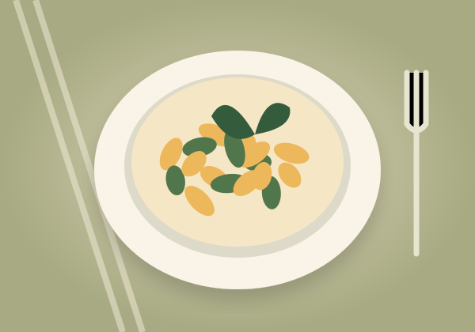

Vegetariano
Bowl de la huerta
Arroz, vegetales de temporada, aguacate y hierbas frescas.
$ 28.000Lo quiero probar
DE LA TIERRA A TU MESA
Una pausa para comer rico. Cocina de temporada, sabores cercanos y una mesa para compartir.
Ingredientes de temporada · Preparación al momento

NUESTRA FORMA DE COCINAR
Raíz es una propuesta académica que imagina un restaurante cercano: una carta clara, ingredientes reconocibles y tiempo para disfrutar.
El menú reúne preparaciones inspiradas en sabores cotidianos. La interfaz pone primero lo que necesitas: elegir un plato, conocer el horario y explorar cómo reservar.
Encuentra tu lugar en la mesa ↗PLANEA TU VISITA
Horario ilustrativo
Martes a domingo
12:00 m. a 9:00 p. m.
Lunes cerrado · Bogotá, Colombia
Proyecto sin sede comercial.
Completa el formulario y revisa el resumen en pantalla. Es una simulación local: no se envían ni se almacenan tus datos y no se confirma una mesa real.
El bowl de la huerta es la opción vegetariana de esta carta ilustrativa. Las necesidades alimentarias deben confirmarse con el personal en un restaurante real.